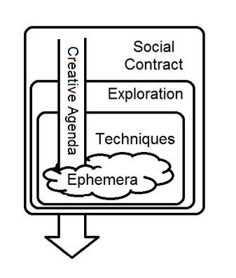
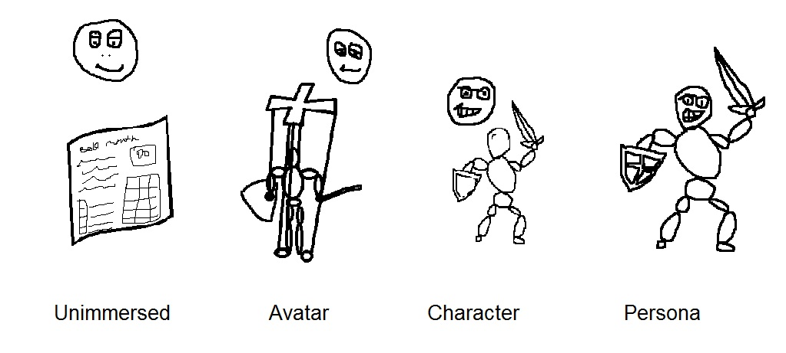
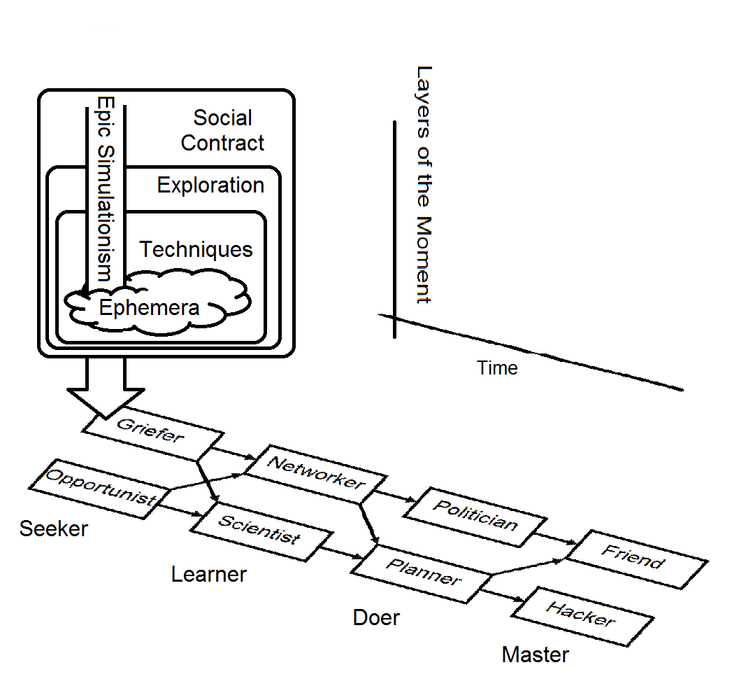
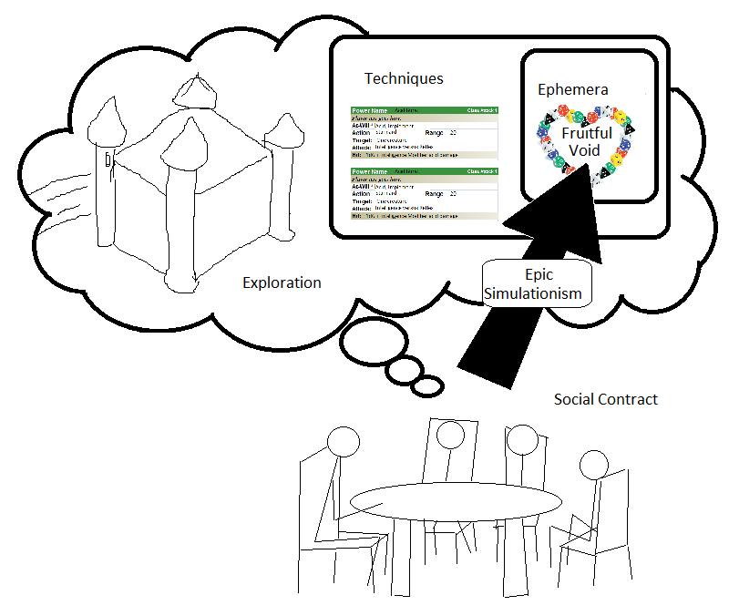

The research shown here was done by myself. Much of the research was concurrent and couldn't have been laid out into the specific path I show here while it was going on. When I began my research, my aim was first the understand and then be able to intelligently answer the question When it comes to tabletop roleplaying games, what is fun?
You may already be protesting, saying that what makes a game "fun" is dependent upon whom you talk to, and even changes moment-to-moment for a single person. This is true. However, when I began my research, I was appealing to a particular niche that I felt was possible but not yet satisfied by any existing tabletop RPG. I couldn't yet even describe what it was I was seeking.
Immediately after my team and I recognized how powerful the Combat Wheel is, we started coming up with ideas for a new RPG. Although some of our members had experience in other RPGs, others had experience in none but D&D. As with many heartbreaker RPG designs, we started building mechanics for the game without having a really clear idea of where we wanted to end up. I can't speak for the other team members, but I think I generally wanted a clone of D&D, tweaked to accomodate the Combat Wheel and to match my particular preferences for the game. We made some progress, but our progress slowed as our lives became busy, and in some cases we would get stuck in circular debates since we had no criteria for deciding what would get us closer to our goals. (It didn't help that we didn't even have clearly defined goals.) As our work on the project slowed, I began to do my own research, which took many months and was extremely enlightening. Eventually I had accumulated enough research that I decided to organize and put it into one place. Thus, the normalproject.wikispaces.com site began (*WARNING - site defunct, now at chatbae.com/tabletophero).
Putting the information in one place like this has reignited my interest in building our RPG, because it allows a bird's eye view of the project and immediate access to a diverse set of external resources (i.e. see the External Resources page). The purpose of laying out the research in the following step-by-step fashion is to make it legible to outside observers and to fully describe the niche that I aim to fill with this game. Note that most of the chapters are really more of a summarized version of existing theories by Richard Bartle and Ron Edwards, to absorb their theories into this particular project. Richard Bartle's Virtual Worlds: Why People Play is especially important, and I strongly advise reading it first.
Before I continue, I want to make a small note regarding all references to the Forge and Ron Edward's ideas. In his article GNS and Other Matters of Role-playing Theory, Ron states
Although Ron calls the literature on the Forge just "what Ron think" and nothing more, I won't distinguish between his opinions and those of the Forge as a distinct entity unto itself. The reason I don't make the distinction is because although the Big Model was created primarily by Ron through his own observations and thoughts, he has freely admitted on the Forge that he was heavily influenced by his conversations with members on the Forge and I'm sure those of previous RPG websites, such as "Hephaestus' Forge" (the Forge's predecessor) and "The Gaming Outpost" (if I've remembered the name correctly). The Forge is basically where the Big Model finds its home.
An index of the subjects I will be discussing.
- Bartle's 2D Player Types Model
- Bartle's 3D Player Types Model and the Bartle Path
- The Big Model: Elements Lacked by the Bartle Models
- The Creative Agenda
- Simulationism
- Epic Simulationism
- The Tabletop Hero Model
- Conclusion
- Additions to the Model
1) Bartle's 2D Player Types Model
Although I couldn't yet define the niche I was seeking to fill nor was I even really aware of the possibility that a tabletop RPG could accommodate different niches, I jumped into research to see what I could come up with. By chance, I came across Mr. Richard Bartle's article Hearts, Clubs, Diamonds, Spades: Players Who Suit MUDs near the beginning. To quote the article:
Are MUDs
- games? Like chess, tennis, AD&D?
- pastimes? Like reading, gardening, cooking?
- sports? Like huntin', shootin', fishin'?
- entertainments? Like nightclubs, TV, concerts?
Or are they a combination of all four? Perhaps individual players even see the same MUD differently from each another?
Mr. Bartle was referring to MUDs (multi-user dungeons, or electronic virtual environments) in this quote, but I see strong parallels between tabletop roleplaying and roleplaying in a MUD and so I included articles on virtual environments as part of my research. Interestingly, Mr. Bartle categorized the tabletop roleplaying game AD&D as a "game", not a "pastime", "sport", or "entertainment", but I chose not to shut down areas of research so early before getting a better idea of the niche I was seeking to satisfy. The Hearts, Clubs, Diamonds, Spades: Players Who Suit MUDs article caught my attention for several reasons, which I'll discuss here:
- Unlike all RPG theories that I had come across up to that point and even to this day, Bartle's model for virtual environments begins by dividing the total sphere of players into categories that logically must span 100% of the player population.
- Several studies and observations of the behaviours of those categories of players appeared to have been done. We can make theories all we like but if there's no observational justification, they're probably fiction.
- A scientific model was constructed based on these observations. A model is important because it takes what we've learned so far and allows us to make future predictions, which is something we'll definitely need if we plan to construct a whole new tabletop RPG.
- All of Mr. Bartle's work was done in regards to MUDs. I believe any research done on tabletop RPGs has a wrench thrown into the works by the social factor. You're accountable for your thoughts and actions at the tabletop, so people aren't free to be true to themselves. Therefore, I consider Mr. Bartle's research in MUDs to be based upon raw, unfiltered player behaviour.
These points are vital for a serious study. If you're going to build a categorization for the sake of research, it is absolutely necessary to build those categories based on that which can be observed, and that the observations can unambiguously place the player into one category or another. Otherwise, you run into trouble even simply gathering research for your model. All RPG-based models I have come across have failed to achieve this basic necessity; some built clever models with mutually exclusive categories but near-zero connection to observed behaviours of players (i.e. "pretty" models), while others are based on observations of player behaviours but fail to categorize players based on unambiguous observations.
I won't go into any more detail on the 2D version of Richard Bartle's theory other than this brief introduction, because I use the model in effectively its entirety, with the sole exception that I transplant it to the domain of tabletop RPGs.
2) Bartle's 3D Player Types Model and the Bartle Path
In the aforementioned article
Hearts, Clubs, Diamonds, Spades: Players Who Suit MUDs,
the space of players is divided only along two axes but the model fails to
capture how and why players change types over time, which Bartle had
observed but not yet explained. Note that the Big Model and all other
table-top RPG theories I've come across don't even remotely acknowledge the
possibility that players may change types over time. In a major effort to
do just that for MUDs, Mr. Bartle discovered that players could be divided
along a third axis, and he expounded upon his theory. You can see the
relevant excerpt from his textbook
Designing Virtual Worlds
in the introduction entitled
Virtual Worlds: Why People Play.
The three axes into which the whole sphere of players in a virtual
environment can be divided depend on what or whom the players are directing
their attention to and how they are dealing with it:
- World versus Players: The players are either focusing their attention on the environment and the computer-controlled characters or each other.
- Active versus Interactive: The players are either acting upon the focus of their attention (i.e. in an imposing way) or interacting with it.
- Implicit versus Explicit: The players either act without forethought or else consciously consider their actions before performing them as a means to a desired end.
Looking at the first two axes gives us back the 2D version of the theory,
and we can already see four distinguishable player types emerge:
Achiever
(World, Active),
Explorer
(World, Interactive),
Killer
(Player, Active),
Socializer
(Player, Interactive). By breaking the player types along a third axis,
implicit versus explicit, we get a total of eight player types. The
difference between explicit actions and implicit actions is the difference
between actions performed with and without conscious direction. For
example, a person learning to dance for the first time has to consider
where his feet and arms and body are moving, while an experienced dancer
doesn't think about these things, he just does it.
The eight personality types formed from this division are -
Opportunist
(Implicit Achiever),
Planner
(Explicit Achiever),
Scientist
(Explicit Explorer),
Hacker
(Implicit Explorer),
Networker
(Explicit Socializer),
Friend
(Implicit Socializer),
Griefer
(Implicit Killer),
Politician
(Explicit Killer). Note that with the inclusion of the third axis, we are
still left with the players clearly divided into mutually exclusive
groups, but it becomes more difficult to unambiguously place a player into
one of the eight categories (at a given time). Several specific paths
followed by players had been observed by Mr. Bartle (and according to his
research), including a Main Sequence, Minor Sequence, and others. I won't
get into details on each specific path because my main concern is the fact
that they can be combined into the single ladder-like diagram, as shown
below, which I've called the
Bartle Ladder.
The diagram is taken from
Virtual Worlds: Why People Play.
When the
Bartle Ladder
is condensed along the Player/World axis, a pattern results which I've
called the
Bartle Path.
It is shown in the following diagram.

- Griefers and Opportunists are Seekers - Seekers look for ways to entertain themselves, typically by hitting people or finding things they can play with.
- Networkers and Scientists are Learners - Learners find out about the other players and the game world.
- Politicians and Planners are Doers - Doers have the skills to do well in the game and actually begin longer-termed campaigns to do so, truly testing their mettle and their minds.
- Friends and Hackers are Masters - Masters have succeeded in their campaigns and enjoy the spoils of victory. Playing the game is second nature.
Richard noted this common pattern of four phases as representing four stages of learning, whether it be learning to walk for the first time or whether it be learning how to successfully become a master fighter in an electronic world. Also from Virtual Worlds: Why People Play -
- Players start off by determining the boundaries of their actions, acting on instinct and their experiences elsewhere in similar situations. They do this either by trying everything that looks reasonable (Opportunist), or by pushing to their extremes (Griefer).
- Having determined the basic actions available to them, they begin stringing together meaningful sequences of actions – learning what works in combination with what else. They’ll do this either by experimenting (Scientist) or by asking someone who already knows (Networker).
- Having acquired the necessary knowledge to operate effectively, they apply it to achieve what they regard as success. Success is measured either by the virtual world (for Achievers) or by other players (for Politicans).
- The players finally master their skills to the extent that these become second nature to them. They now understand the virtual world (Hackers) or their comrades (Friends) implicitly, without having to think about what effects any actions may have on them – they “just know”.
This “locate to discover to apply to internalise” path is how learning works in general. Babies will thrash around until they discover that doing this makes this happen to their foot; they will combine various sequences of such actions and find that if they do this then this then this, they can kick – moving their legs as a coherent action; they apply this knowledge in the furtherance of other goals (I want the biscuit, the biscuit is over there – hey, I can toddle over and get it!); finally they toddle so much that they don’t have to think about it any more – they can simply walk. So now we have an explanation of drift in terms of player types. Unfortunately, we still don’t know what drives this drift, nor why players consider it to be fun. It’s clear that players are learning something, but what?
Mr. Bartle goes on to answer his final question in relation to Immersion and something called "The Hero's Journey" in the same document Virtual Worlds: Why People Play. I began to wonder about the coexistence of players within the same game, who are following different paths along the Bartle Ladder but going through the same phases of the Bartle Path. However, I'm slightly jumping the gun; I'll discuss this more in Chapter 6.
As with Bartle's 2D model, I won't be going into more detail here on his 3D model since more details can be found on his site and in his textbook Designing Virtual Worlds. The textbook is an extremely worthwhile read, and that is a conclusion I came to even before discovering that it has apparently become the virtual world designer's bible. The textbook is available for purchase online, so I'm certain he'd appreciate it if you picked up a copy of it.
Another model representing this same basic learning pattern can be found at
http://www.businessballs.com/consciouscompetencelearningmodel.htm.
I liked this model because it relabels the Implicit/Explicit axis as
Unconscious/Conscious and gives a thorough description of what this axis
means. Furthermore, the fact that the same general learning model was
uncovered by independent people (or groups) from different angles lends
strength to all of them. (For now, I do not refer to the later sections
which, in addition to the four phases, there is a final fifth Teacher phase.
I may not include it at all.)
While researching these topics, I was still studying the
Big Model
as well. I knew it was vital to recognize the other issues that exist in
tabletop RPGs that do not exist in virtual RPGs.
3) The Big Model: Elements Lacked by the Bartle Models
Generally the best theory I've found relating specifically to tabletop RPGs, exclusive from MUDs, is the "Big Model" presented on the Forge. It was constructed primarily through the collaborative effort of Ron Edwards and the many gamers who'd visited the Forge (founded in large part and moderated to this day by Ron Edwards).
The Forge's Big Model fails to achieve even Point #1 discussed in Chapter 1, let alone the other points. For example, why can't a player aim for multiple Creative Agendas simultaneously? (I no longer believe they can, but there is no justification either way in the Big Model except through hand-waving.) As another example, one might ask regarding a given behaviour of a player: is the player performing a Simulationist action in service to a Gamist creative agenda, or is the player performing a Simulationist action in service to a Narrativist creative agenda?
The Big Model, though called a "model", therefore can't be used to make predictions very well except in the most vague way. E.G. if you're in the mood for a Narrativist type game, don't look for one that has a "win condition" for the players.
However, it does seem that the Big Model has a lot of observational "data" behind it from the gamers debating on the site. Usually online forums spell disaster for a debate on any subject, but through the apparent efforts of Ron Edwards (and others), the debates appear to have been constructive. The amount of collective effort behind the Big Model seems to be significantly greater than that for any other tabletop RPG-oriented model I've come across. (I specifically exclude Mr. Bartle's model here because it was oriented towards MUDs.) Therefore, although I kept Mr. Bartle's theory as a main platform for my own ideas, I spent a lot of time trying to understand the Big Model as well.
A good introduction to it can be found here. Another decent look at the Big Model can be found here - Classic RPG Realms: The Answer to the Edition Wars: The Big Model
The huge advantage that the Big Model has over Bartle's model is that it takes into consideration a few dimensions of play which MUDs pretty much lack. The Big Model is represented with four layers that encapsulate each other like an onion. Running through each layer to the center is the Creative Agenda.
I discuss the Creative Agenda in Chapter 4.
Social Contract
For tabletop roleplaying games, the players typically consist of people who are friends in real life, or at the very least, are acquainted with each other. The Social Contract layer of the Big Model is therefore wide and varied; the players must come together and agree "we are playing" and "we are playing this game". This is as opposed to a MUD, if players encounter each other, it is coincidental more often than not and therefore no social contract exists.As shown by the diagram of the Big Model, the Social Contract layer of the Big Model encompasses all other aspects of roleplaying. It relates to all agreements made and issues between the players, both explicitly and implicitly. This includes not only the obvious elements such as which game to play and what roles are assumed by whom, it can also include elements that apparently have nothing to with the game. An example is tension between two players due to an argument they'd had earlier in the day regarding their favourite sports team, or who's picking up the tab for pizza and cola.
The reason that it is important to acknowledge this layer is that we can then open another dimension of game-play we don't usually think about. For example, mood-setting techniques have absolutely no direct effect on the SIS, and everything to do with making the experience more enjoyable for the players. There is absolutely no reason that these and other Social Contract Layer techniques couldn't be incorporated even into the written rules of the game. Many modern games do just that, though I haven't studied any yet. "Solaris RPG" is an example; I believe it uses the lighting of candles to enhance the mood.
Exploration
The mechanics of an electronic virtual environment do not easily allow for exploration (distinct from the player type "explorer") because of the inherent finiteness of the environment. There are NPCs, sometimes "quests" planted by the game designers for players to take part in, and the players have access to a set of choices for building their characters. However, the NPCs behaviour and conversation is canned, the plots of the quests are fixed with one or finite binary win conditions, and the build choices for the PCs are limited. In some electronic virtual environments, you have build rights (i.e. the ability to generate new objects and put them into the environment), but such building activities are akin to sandcastle building and don't constitute exploration except in the sense of the exploration of the system itself.The exploration layer of a tabletop roleplaying game can be significantly larger because the space of choices is limited only by the imaginations of the players. The NPCs can be dynamic, quests can be amorphous, and there is a greater possibility for exploration of one's own character. Some games tend to reduce the space of exploration to finite choices anyway (for example, characters are limited to certain classes and races in Dungeons & Dragons), but at least the possibility exists for breaking out of the boundaries in all cases for a tabletop game.
Recognition of the vast possible size of this layer is important, because it's easy to slip into the traditional modes of thought and start defining finite lists or avenues for exploration in the SIS.
Techniques
In an electronic virtual environment, there is typically almost no distinction between "the whole collection of techniques" and "the system". If it's against the rules of the game, the system won't allow you to do it. The players themselves may impose additional techniques on top of the system, but it may be difficult to maintain these additional techniques since no other players outside of your gaming group will be aware of them. There may also be social rules that cannot easily be enforced by the game servers, such as a ban on curse words, but typically these reduce to just extra boundaries rather than actual techniques for game-play purposes. Consequently, if you don't like aspects of the game, you're pretty much out of luck. You have to accept it the way it is or move on and find another electronic virtual environment.In tabletop games, what we call "the system" is significantly more amorphous through the addition of house rules or the forgetting or ignoring of written rules of the game, or even optional written rules. The players and GM have complete control over this layer, but it is easy to forget this fact and just use the rules of the game mostly as-is with few minor additions or subtractions. Consequently, the same problems tend to occur as found in virtual electronic environments; i.e. being forced to either accepting the game mostly as-is or moving to a different system.
Recognition of the control that a tabletop RPG player has over the techniques of the game is important not just for players, but game designers as well. The reason it is important for designers is because it may be too easy to fall into the trap of believing that changing the written rules will perforce change the gaming experience for the players, but this is absolutely not necessarily the case. Writing up the rule "Don't insult fellow players" in a game manual is possibly fruitless (though a little reinforcement never hurts).
Ephemera
Ephemera consist of the actual processes of playing the game. If chess were an RPG, the ephemera would consist of picking up and moving pieces, calling out certain consequences (e.g. "Check"), and maybe tapping a clock. In an electronic game, the ephemera is a bit more varied because it is possible that you may speak to colleagues through chat or voice chat. However, most of the mechanics of the game are handled by the game engine, so the ephemera of an electronic game almost inevitably boils down to mostly mouse moves and clicks and hotkey presses.In tabletop RPGs, the Ephemera layer is vast and extremely important, to the point that I suspect many tabletop RPG texts do not give this layer enough attention as a whole and unified entity. The ephemera layer, taken together with the players own thoughts and feelings, defines the gaming experience; it directly translates into the Fruitful Void (though it is not equivalent to the Fruitful Void). If RPG designers instead focus on the techniques available to the players, leaving other elements open to the game master's and player's guesses, unintended consequences may emerge.
For example, a subject I have seen discussed in some tabletop RPG texts is the spotlight, or the amount of attention each player gets while the game is being played. If the spotlight is mishandled, which may happen a lot more easily if the rules for handling the spotlight are vague or non-existent, it is easy for players who are simply louder to get more "screentime" than other players. (See spotlight in the Glossary). Depending on their personalities, the other players may be fine with this or it may hurt their feelings, leading to a negative gaming experience overall.
Other aspects of the ephemera layer, such as search time and handling time, are an integral part of the tabletop RPG experience but which can't really be said to exist in electronic RPGs.
4) The Creative Agenda
In the previous section, for each of the four layers of the Big Model, I have described how the layer is either suppressed or altogether missing from an electronic virtual world. I have then gone on to describe how tabletop RPGs must have each of these layers, and I have described the properties of the layers.The Big Model also recognizes three Creative Agendas (CA), where the Creative Agenda is described as what the game is "about", i.e. the type of experience desired by players or likely emergent from a given game. The three CAs regognized by the Big Model are: Gamism, Narrativism, and Simulationism.
In brief, gamists are interested in competition with other players, narrativists seek to grapple or almost experiment with meaningful moral and social issues or any issue that is meaningful to the players, while simulationists are most interested in visceral play experiences and getting deeper into exploration of some of the facets of the game (those facets being Character, Color, Setting, Situation, and System as described in Ron Edward's article Simulationism: The Right to Dream).
Apparently, players usually don't fit neatly into these three categories but they will, in general, most of time, seek to fill an appetite of at most one of these agendas. An observer can't really determine which agenda a given player is seeking to satisfy by observing individual instances of play, and must instead observe the behaviour of that player over a long period. The reason this is so is because a given instance of play may be in service to any of the three agendas and may differ from how the action itself may be classified.
For example, attempting to beat an NPC opponent may sound like the action of a gamist, but it may be performed by a simulationist attempting to act out what his character would do, or it may be performed by a narrativist trying to experience the consequences of choosing to perform murder for the sake of a greater good.
From what I can tell, the Big Model fails to acknowledge any possibility that the players may change types over time, even during the course of several sessions of play. I won't draw any direct quotes from the Forge, but it seems to me that the solution prescribed by the Big Model when people of differing Creative Agendas want to play a tabletop RPG is just that they simply shouldn't. Instead, they should find people whose desired play experiences match their own and play with them instead. The RPG system that they play should also be specifically chosen to support and enhance those kinds of experiences.
I wasn't happy with this advice because I felt like players with differing CAs ought to be able to play together. It seemed to me that Bartle's Models offered the ability to achieve this goal, because there appears to be a general correspondence between the Creative Agendas recognized by the Big Model and the Player Types recognized in the 2D version of Bartle's model. The loose correspondence is as follows:
- Gamist - Killer
- Narrativist - Socializer (very loosely)
- Simulationist - Achiever, Explorer
I decided to use this apparent intersection as a bridge between the Big Model and the Bartle Path. My brief initial temptation was simply the drop the Creative Agendas of the Big Model altogether and replace them with the player development tracks recognized by Bartle's models. I adapted the Bartle Path to tabletop RPGs by absorbing relevant parts of the Big Model.
However, though I eventually was able to combine the models, it wasn't through this given supposed correspondence. Attempts to combine the models through the shown correspondence failed. As I tried to become intimately familiar with the Big Model, I came to the conclusion that the Creative Agendas of the Big Model deserved much further attention. My summary of the Big Model Creative Agendas at the beginning of this chapter was very rough.
Gamism and Narrativism
Initially, the correspondence between Gamism and the Bartle 2D model's Killer player type seemed to be relatively clean and so I assumed the Gamist CA was simply a facet of the Bartle Models. I have since very definitely changed my opinion, but I'll bring this up again in Chapter 6.Unlike Gamism, the Narrativism Creative Agenda is a very loaded concept and did not comfortably translate over to the Socializer player type even at first glance. It would be better to say that Narrativism is least unlike the Socializer player type versus the other player types of the Bartle models. Granted they both revolve around deeply interactive sessions between players, but that's where the similarities end.
This is where it gets interesting, because the style of game described by Narrativism is very subtle and takes some work to really understand. I recommend reading (several times) Ron Edward's essay Narrativism: Story Now. Narrativism revolves around a core emotional issue. The essay calls it "premise", which again adapts the term from The Art of Dramatic Writing by Lajos Egri. (See premise.)
In Narrativist play, the players are working together to digest a core issue (i.e. the premise) to produce some emotional resolution, regardless of what that resolution may turn out to be. The destination is not the important part, implying in part that the emotional resolution need not involve positive emotions. For example, a game entitled My Life With Master is advertised as "a roleplaying game of villainy, self-loathing, and unrequited love" and was intentionally built with a Narrativist Creative Agenda in mind. In the game, the PCs are forced to choose between obeying their Masters for soul-nourishing feelings of love and acceptance, but in obeying their Masters, they are required to perform increasingly soul-corrupting acts such as violence and torture.
When I first encountered the Narrativist CA, I struggled with how to incorporate it into my thinking because I was of the opinion that it should fit within the Bartle Models. However, after much, much thought and discussion of these ideas with members of the Forge (e.g. see "Ruminations on the Impossible Dream Before Breakfast"), I came to the conclusion that the general opinion on the Forge was correct. The suggestion of some members of the Forge was that I should consider that the niche I sought to satisfy was of a Simulationist CA.
In short: I had done a reversal and eventually come to believe that, despite the lack of scientific treatment, there is probably a large amount of truth behind the Big Model. Although it is tempting to associate the Gamist CA with the Killer player type and the Narrativist CA with the Socializer player type, to do so is not appropriate. Those games that are well-designed to produce either the Narrativist or Gamist experiences are likely very hindered when they are used to attempt to produce the same total range of experiences that a player is capable of achieving through a MUD (multi-user dungeon, an electronic environment).
Consequently, I decided to shed the Narrativist and Gamist Creative Agendas for this project. I couldn't say what proportion of players shared my own appetite, but I suspected it was very large. With the direction of the project clearer to me by the exclusion of what I knew I didn't want, I studied Simulationism more deeply.
5) Simulationism
In Ron Edward's essay entitled "Simulationism: The Right to Dream", he summarizes the Simulationist Creative Agenda -| The key issues are shared love of the source material and sincerity. Simulationism is sort of like Virtual Reality, but with the emphasis on the "V," because it clearly covers so many subjects. Perhaps it could be called V-Whatever rather than V-Reality. If the Whatever is a fine, cool thing, then it's fun to see fellow players imagine what you are imagining, and vice versa. (By "you" in that sentence, I am referring to anyone at the table, GM or player.) To the dedicated practitioner, such play is sincere to a degree that's lacking in heavy-metagame play, and that sincerity is the quality that I'm focusing on throughout this essay. . Sincere shared creativity: all role-playing has to have it. For some, it's the whole point. |
The reference to virtual reality is very relevant here, and is something I'll discuss in more detail in chapter 6. Also relevent are the following bits from the article "GNS and Other Matters of Role-playing Theory", again by Ron Edwards, with extraneous parts removed -
| Talk to someone who participates in role-playing, and focus on the precise and actual acts of role-playing themselves. Ask them, "Why do you role-play?" The most common answer is, "To have fun." <etc.> . In my experience, the answer turns out to be a version of one of the following terms. These terms, or modes, describe three distinct types of people's decisions and goals during play.
. Simulationist Premises are generally kept to their minimal role of personal aesthetic interest; the effort during play is spent on the Exploration. Therefore the variety of Simulationist play arises from the variety of what's being Explored.
The key to Simulationist play is that imagining the designated features is prioritized over any other aspect of role-playing, most especially over any metagame concerns. The name Simulationism refers to the priority placed on resolving the Explored feature(s) in in-game, internally causal terms. . Controversy: is that third box really there? It has rightly been asked whether Simulationism really exists, given that it consists mainly of Exploration. I suggest that Simulationism exists insofar as the effort and attention to Exploration may over-ride either Gamist or Narrativist priorities. Some of the following examples refer to RPG rules and text; I am referring to people enjoying and preferring such rules and text (i.e. the people, not the game itself). . (etc.) . In conclusion, Simulationism exists as an established, real priority-set of role-playing, with its own distinctive range of decisions and goals. . |
In his work, Ron argues (successfully, if you read the full article) that a third Agenda exists beyond Gamism and Narrativism which has, as its focus, non-metagame priorities. He calls this other creative agenda Simulationism and breaks it up into distinct aspects, though explains in his essays that all aspects of exploration of a game are present at all times. Different aspects may be highlighted depending on the whims on the players and the orientation of the game system. Ron's ultimate claim is that Simulationism is about exploration, either of the system or of different aspects of the shared imagined space (SIS). Metagame priorities are minimized in favour of this exploration. He again points out that "experiential consistency of the Exploration" is important to the Simulationism CA.
Note that experiential consistency is also a prerequisite for most if not all forms of entertainment that involve fiction. Anything that breaks the attention of the audience away from the fiction may interrupt and possibly destroy the entertainment experience. This can be true for players of electronic virtual worlds in a big way (though, granted, this is certainly not true for all players in such virtual worlds, especially those virtual worlds with a Gamist bent).
The prioritization of the exploration of an imagined space or the system was, I felt, a very necessary but insufficient description of the creative agenda I was attempting to put into words. What I mean is, to fulfill the agenda I wanted, a focus on the shared creative exploration of the world was important enough that losing the focus would kill the experience altogether, but having the focus was, by itself, not quite enough. It was as though Ron, in his analysis, had discovered the "symptoms" of the CA without actually capturing the drive or motive of the phenomenon.
When I came back to study the Simulationism CA from a more critical perspective, I was able to accept that Simulationism as described by Ron also netted my own creative agenda but I sought the deeper motive. Though at first I didn't know what that motive was, I was finally able to fill in the blanks very easily given my earlier studies of the Bartle Models.
6) Epic Simulationism
In coming to this point, my interest in the Bartle models was recaptured.As previously discussed in Chapter 4, the supposed correspondence between Bartle's four player types of the 2D model and Ron Edward's creative agendas is very poor. Richard Bartle's work also doesn't, at first glance, appear related to the Simulationism creative agenda alone because Bartle's models explicitly recognize metagame (i.e. player-to-player) priorities.
However, note these excerpts from Richard Bartle's "Virtual Worlds: Why People Play":
- "So now we have an explanation of drift in terms of player types. Unfortunately, we still don’t know what drives this drift, nor why players consider it to be fun. It’s clear that players are learning something, but what?"
- "A clue as to what it is that players are learning comes from an understanding of the concept of immersion. What is Immersion? Immersion is the sense that a player has of being in a virtual world."
Immersion, the sense of being in a virtual or imagined world, is key here. Mr. Bartle describes immersion as a progression - unimmersed, avatar, character, and persona.

- Unimmersed: To an unimmersed player, the shared imagined space does not currently exist. The PC is simply, say, a piece of paper with a collection of statistics and descriptions (or whatever is appropriate to the system). The player may fiddle with the statistics or work on the PC's life history with the same emotional investment that a mechanic puts into maintaining a car.
- Avatar: An avatar is, quite simply, a puppet. The player makes the avatar walk, talk, and act in the imagined world, in a relationship analagous to that between a player and a video game character.
- Character: "Character" is unlike the term player character (PC), which is applicable regardless of the level of immersion of the player. The character is a representation of the player seen through the lens of the SIS. The player no longer controls the entity in the SIS, but instead acts through it.
- Persona: To quote Bartle, "a persona is a person – a player, in the virtual world." The player is so deeply immersed in the SIS that the individual character effectively no longer exists. Instead, it is a true hybrid of the player and the character, dressed up as the character.
The progression of states of immersion occurs for all players, even those who pass through the Killer and Socializer player types. However, such players show these metagamist priorities through their characters in the virtual or imagined world. Thus, although some players may appear to be operating with a kind of Gamist or Narrativist CA, they operate from within the mindset of the depth of their immersion in the game. For example, a player who is at the avatar level of immersion might think "I'm very good. I effectively used my warrior character to defeat that player!" while a player who is at the persona level of immersion mght think "I'm very good. I defeated that player-character!"
The quest for depth of immersion satisfies Ron Edwards definition of Simulationism because of the prioritization of the fictional world, the shared imagined space, despite the fact that players may secondarily have metagamist priorities as well. However, as I mentioned in Chapter 5, Ron Edwards definition isn't complete for my purposes; it doesn't explain why this journey can be entertaining, if done properly. Richard Bartle's research fills in the blanks. He uncovers the fact that, although immersion is a big part of what's fun in virtual worlds, it is by itself not actually what players find entertaining. To again quote his "Virtual Worlds: Why People Play":
| Immersion and Identity As players become more aligned with their characters, they become more deeply immersed in them (and in the virtual world). At the same time that they are experiencing this increase in immersion, they are also progressing along the development tracks as described earlier..Ideally they should reach the ends of both at the same time. However, if the virtual world has too much of a treadmill then they could reach full immersion before they finish: this will lead to feelings of frustration – they feel they’ve won, but the finishing line is still distant. Similarly, if the virtual world allows content to be consumed too quickly then they could finish before they reach full immersion: this will lead to feelings of dissatisfaction – they’ve crossed the finishing line but they don’t feel they’ve completed the course. The job of the virtual world designer is to ensure that most players become their characters at roughly the same time that their characters’ skills become internalized. |
In his work, Bartle uncovers the source of entertainment: Becoming immersed in a virtual world while learning what is required to become a master of it, and ultimately oneself.
To keep the terminology straight, I'll define this source of entertainment as a new creative agenda, Epic Simulationism. Epic Simulation is a subset of Ron Edward's Simulationism because, while it focuses upon non-metagame priorities (i.e. a depth of immersion), it also requires all of:
- a progression of player states (via the Bartle Ladder)
- a progression of depth of immersion
- a link between the two progressions so they complete simultaneously
I'll discuss this further in Chapter 7.
Despite my earlier rejection of Narrativism in Chapter 4, I suppose that it might be a specialized kind of Epic Simulationism, but I won't be exploring this possibility.
Gamism steps somewhat outside the boundaries of the Bartle Models. I have come to think that my decision to shed the Gamist CA was correct, but not for the reasons I had initially thought. At first, I ignored it because I assumed it was subsumed into the Killer player type of the 2D Bartle Model. However, I now believe that because a player with a Gamist CA need not get to any particular depth of immersion in order to enjoy the game, the Gamism CA truly is distinct from Epic Simulationism and Simulationism. Players can participate in a gamist game and stay entirely at the avatar depth of immersion throughout the whole experience. Similarly, while a player with an Epic Simulationist CA may display gamist tendencies as they pass through Killer-type phases, ultimately they will not enjoy the experience unless they reach the "top of the hill", achieving full immersion as they have completed their trek along the Bartle Path.
Incidentally, I think Simulationism deserves to continue to exist independently of Epic Simulationism. Simulationism merely requires an interest in experiential consistency. If a player were interested in, say, simulating a pre-existing piece of fiction (such as Star Wars), the depth of immersion in the game wouldn't necessarily be required for the player to enjoy the experience.
7) The Tabletop Hero Model
By describing Epic Simulationism as a creative agenda, it can become the interface between the Big Model and the Bartle Path, which allows us to build a comprehensive model. In a very meaningful way, we can place the two component models perpendicularly, with the Big Model describing each "play-slice" and the Bartle Path describing how play evolves over time.I'll call this new comprehensive model the Tabletop Hero Model (TTHM), to distinguish it from its component models. The new model achieves the goal of adapting Bartle's work to the tabletop RPG domain.

TableTop Hero Model (TTHM)
In the model shown, the "floor" is taken from "Virtual Worlds: Why People Play".
As demonstrated in this model, each moment of gameplay is built from the four layers of Ron Edwards Big Model; namely the Social Contract, Exploration, Techniques, and Ephemera layers. The layers envelop each other, with each inner layer being an expression or product of the outer layers. The creative agenda, shown here as the arrow of Epic Simulationism, begins in the Social Contract layer when a group of players decide to play a tabletop RPG together and choose a game. The arrow pierces through each inner layer and drives them to come into existence for the purpose of bringing about the players' desired experiences, ultimately consisting of a collection of ephemera.
Each player desires their own kinds of experiences, shown as the different player types of the Bartle Ladder, but each player goes through the same four phases of the Bartle Path as their immersion deepens: Seeker, Learner, Doer, and Master. The players begin their journeys unimmersed and should ideally reach the end of their respective journeys fully immersed as Masters. The model has the Creative Agenda (Epic Simulation) arrow pointing at the "griefer" category, but each player would have his or her own arrow, that may point at different places along the map.
However, the tricky part comes in when we consider that all players must pass through the four Bartle Path phases (Seeker, Learner, Doer, Master) simultaneously since, unlike in a MUD, the players are stuck with each other, or at least I've made the conscious decision to try and build a model that allows for players of differing interests to be able to play together in the same game. Therefore, although I don't yet want to close off potential opportunities by requiring that all players must progress through the Bartle Path at exactly the same rate or that they must be at precisely the same depth of immersion at a given time, there should at least be generally matching rates of progression and path completion.
To continue from here, we will use the tabletop hero model (TTHM) as the nucleus of our theory and arm ourselves with insights from both Richard Bartle's work, i.e. the Bartle Ladder as well as his relevant literature, and Ron Edward's Big Model.
8) Conclusion
I began my research by asking what makes a tabletop game fun.There are several qualities, including player-to-player competition such as through chess, boardgames or wargames, or games that are themselves a challenge such as with Solitaire or adventure boardgames that pit the players against the game itself. Some modern games even allow the players to deal with a difficult or interesting subject in the context of a fictional scenario.
However, I have come to discover that I am seeking a very specialized kind of fun, first recognized by Richard Bartle, which I have come to call Epic Simulationism. Simply becoming immersed in a fictional world is not enough, and becoming powerful in the context of a fictional world but lacking immersion in it is also not enough.
The key is becoming immersed in a virtual world while simultaneously learning what is required to become a master of it. In doing so, the players ultimately explore, learn about, and master themselves. This is fun!
[1] Urdang, L. & Manser, M. (1980). The Pan Dictionary of Synonyms and Antonyms Pan Reference, London, UK.
9) Additions to the Model
It has been a few years since I wrote the original theory and I'm still happy with it, though I have yet to actually build anything from it. (It felt like a good, natural stopping point to break.) I'm quite happy with the model and am resting it mostly upon the work of Richard Bartle. Despite the lack of my own actual scientific treatment, I trust the research put into Bartle's work.That said, I've had time to ruminate on the theory and I would like to add one final addition to the Tabletop Hero Model. It's not really something new, because although Ron Edwards had not explicitly placed this into his models, it was hinted at and talked about throughout many discussions on the Forge. (I'm actually quite surprised this wasn't added by Ron.)
Below the "Ephemera" layer is one more layer. The gooey center of the game itself, called the Fruitful Void (FV). Everything else, all of what we do when we play a roleplaying game, is in service to the Fruitful Void. We tend to imagine a perfect game where we're having tons of fun and the game is thrilling and exciting. This "thing" that we imagine is a well-functioning and slick Fruitful Void. Ideally, the Creative Agenda should dig down through the layers and strike gold at a Fruitful Void that looks like what we imagine it to be.
Designers make decisions in the structure of the game, attempting to make the rules in a way that they lead players naturally to that ideal Fruitful Void through gameplay. A particularly good article on the Fruitful Void, written by Vincent Baker of Lumpley Games, can be found here: http://lumpley.com/index.php/anyway/thread/119
Taking this deepest layer into account, I'll redraw the Big Model as follows, with the Fruitful Void, which you might call the game experience itself, being spawned from the Ephemera layer (i.e. the processes of gameplay, such as rolling dice and enacting Techniques from the Techniques layer.)

As mentioned, ideally the Fruitful Void is as fun as players expect it to be when they first decide to start playing the game. However, it can be difficult to contain and control as a game designer, unless the game is very simple. Take the card game poker, which has "bluffing" and other social interactions as its Fruitful Void where the real game takes place.
If I began my research with the question of "What is fun (for me)?", the Fruitful Void and how to control it would answer the next question, "How..?"